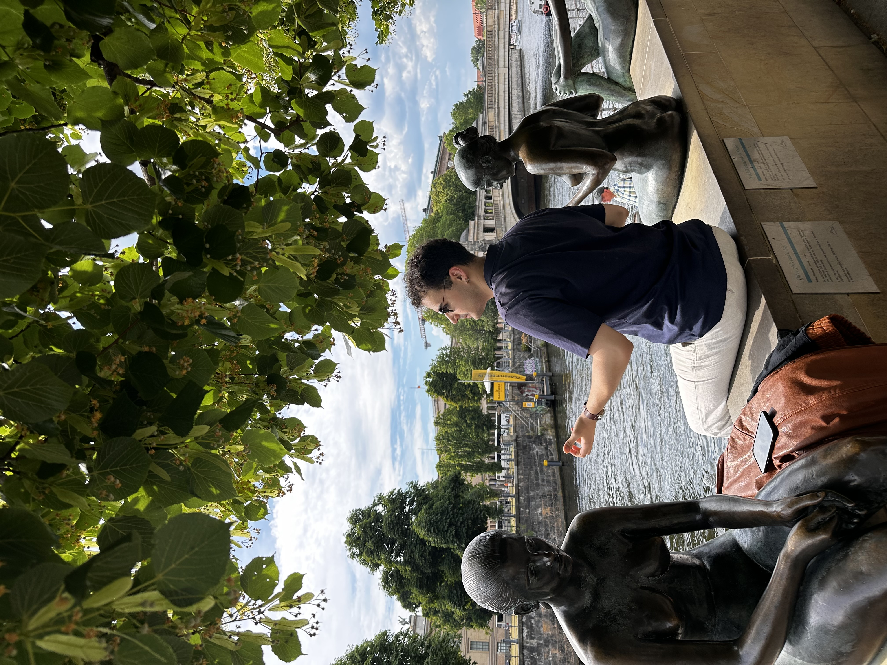

Bilkent Üniversitesi Psikoloji Son Sınıf Öğrencisi & Araştırmacı.
Bilkent Üniversitesi Psikoloji Bölümü'nde son sınıf öğrencisiyim. İnsan belleğinin nasıl çalıştığına, özellikle de sahte bellek, kolektif bellek ve istemsiz bellek konularına büyük ilgi duyuyorum.
Bugüne kadar hem Bilkent'teki Gerçek Dünya Bilişi (Real-World Cognition) hem de Çok Modlu Dil (Multimodal Language) laboratuvarlarında çalışma fırsatım oldu. Bu süreçte deney tasarlamayı ve R, Python, JASP, SPSS gibi programlarla veri analizi yapmayı öğrendim. Yakın zamanda ise Polonya'daki Jagiellonian Üniversitesi Uygulamalı Bellek Araştırmaları Laboratuvarı'nda yaz stajımı tamamladım. Orada Qualtrics üzerinden deneyler kurdum, istemsiz bellek üzerine literatür taramaları yaptım ve bazı psikolojik ölçekleri Türkçeye çevirdim.
Akademik araştırmaların yanı sıra sivil toplum alanında da tecrübem var. Eşit Nesiller Derneği'nde AB fonlu bir projede Proje Asistanı olarak çalıştım. Bu sayede laboratuvar dışında da veri analizi yapma, bütçe takibi ve proje yönetimi gibi konularda kendimi geliştirdim. Ayrıca okulumda veri analizi derslerinde öğretim asistanlığı (TA) yapmaktan da büyük keyif aldım.
Şu an lisans bitirme tezim ile ilgileniyorum.
Henüz yayınlanan bir makalem bulunmamaktadır. Gelecekteki akademik makalelerim ve konferans bildirilerim burada listelenecektir.
Akademik işbirlikleri ve araştırma projeleri için iletişim ağım.